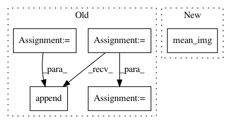

d64b3e882f106f19ea02a5a6066e60a9c0616c5b,pynets/core/utils.py,,make_gtab_and_bmask,#Any#Any#Any#Any#Any#Any#,1413
Before Change
// Extract and Combine all b0s collected
print("Extracting b0\"s...")
cmds = []
b0s_bbr = []
for b0 in b0s:
print(b0)
b0_bbr = "{}/{}_b0.nii.gz".format(namer_dir, str(b0))
cmds.append("fslroi {} {} {} 1".format(dwi_file, b0_bbr, str(b0), " 1"))
b0s_bbr.append(b0_bbr)
for cmd in cmds:
os.system(cmd)
// Get mean b0
mean_b0 = mean_img(b0s_bbr)
nib.save(mean_b0, B0)
// Get mean b0 brain mask
After Change
b0_vols.append(dwi_data[:, :, :, b0])
// Save mean B0
mean_B0_img = mean_img([nib.Nifti1Image(B0, affine=dwi_img.affine) for B0 in b0_vols])
nib.save(mean_B0_img, B0)
// Create mean b0 brain mask
mean_b0_mask = compute_epi_mask(mean_B0_img, lower_cutoff=0.15, upper_cutoff=0.75)
In pattern: SUPERPATTERN
Frequency: 3
Non-data size: 5
Instances
Project Name: dPys/PyNets
Commit Name: d64b3e882f106f19ea02a5a6066e60a9c0616c5b
Time: 2019-08-24
Author: dpisner@utexas.edu
File Name: pynets/core/utils.py
Class Name:
Method Name: make_gtab_and_bmask
Project Name: nilearn/nilearn
Commit Name: 36dd7cf04dcd4e71ca4e1a0086713c51759fd42d
Time: 2015-07-28
Author: elvis.dohmatob@inria.fr
File Name: plot_poldrack_space_net.py
Class Name:
Method Name:
Project Name: nilearn/nilearn
Commit Name: 986aacd1c7ed2f7000cc9816057f96d59701e066
Time: 2015-07-28
Author: elvis.dohmatob@inria.fr
File Name: plot_poldrack_space_net.py
Class Name:
Method Name: